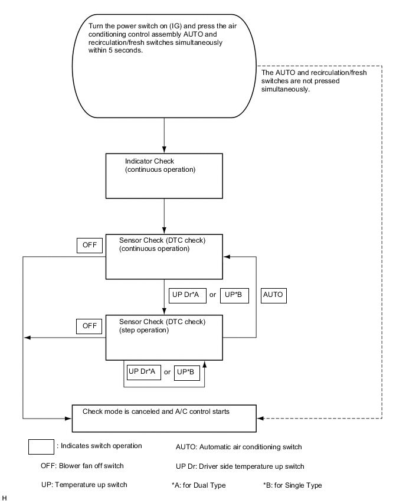
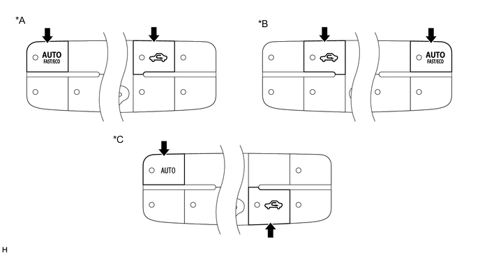
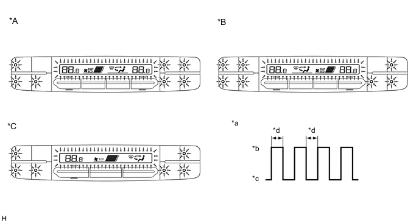
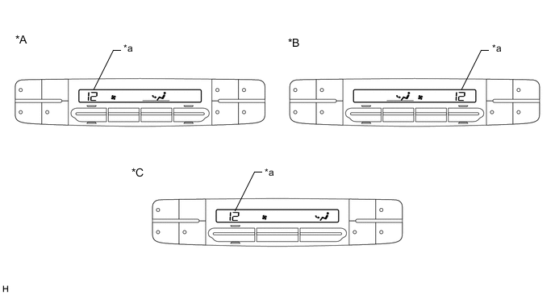
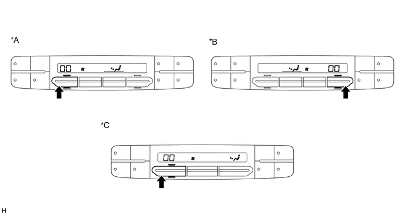
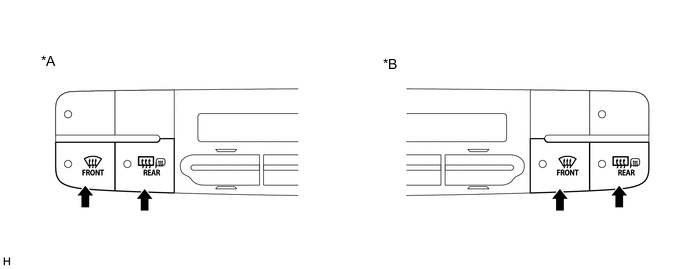

DESCRIPTION
Air conditioning system data and Diagnostic Trouble Codes (DTCs) can be read through the Data Link Connector 3 (DLC3) of the vehicle. When the system seems to be malfunctioning, use the GTS to check for malfunctions and perform troubleshooting.
CHECK DLC3
Check the DLC3.
LIST OF OPERATION METHODS
By operating each of the air conditioning control switches as shown in the diagram below, it is possible to enter diagnostic check mode.

INDICATOR CHECK
Turn the power switch off.
Turn the power switch on (IG) and press the air conditioning control assembly AUTO and recirculation/fresh switches simultaneously within 5 seconds.

| *A | for LHD (for Dual Type) | *B | for RHD |
| *C | for LHD (for Single Type) | - | - |
The indicator check is automatically performed when panel diagnosis is activated. Check that the indicators light up and go off 4 times at 1 second intervals continuously.

| *A | for LHD (for Dual Type) | *B | for RHD |
| *C | for LHD (for Single Type) | - | - |
| *a | Indicator Blinking Pattern | *b | ON |
| *c | OFF | *d | 1 Sec. |
Tech Tips
The sensor check automatically starts when the indicator check is completed.
Press the OFF switch to cancel check mode.
SENSOR CHECK (DTC CHECK)
Perform the indicator check.
Tech Tips
After the indicator check is completed, the system enters DTC check mode automatically.
Read the DTCs displayed on the display.

| *A | for LHD (for Dual Type) | *B | for RHD |
| *C | for LHD (for Single Type) | - | - |
| *a | Diagnostic Trouble Code (DTC) | - | - |
Note
In sensor check mode, which is automatically entered after indicator check mode, troubleshooting may be partially performed. Be sure to perform the sensor check again.
Tech Tips
Refer to Diagnostic Trouble Code Chart for details of the codes.
When there are no problems, DTC 00 is output.
As an example, the illustration shows that DTC 12 is output.
If the DTCs are difficult to read because they change automatically, Push the driver side TEMP up switch*1 or TEMP up switch*2 to display the steps one at a time so that they can be read easily. The items are displayed step by step each time the driver side TEMP up switch*1 or TEMP up switch*2 is pushed.
*1: for Dual Type
*2: for Single Type

| *A | for LHD (for Dual Type) | *B | for RHD |
| *C | for LHD (for Single Type) | - | - |
Tech Tips
Press the OFF switch to finish panel diagnosis.
Clear the DTCs.
During the sensor check, press the front defroster switch and rear defogger switch simultaneously.

| *A | for LHD | *B | for RHD |